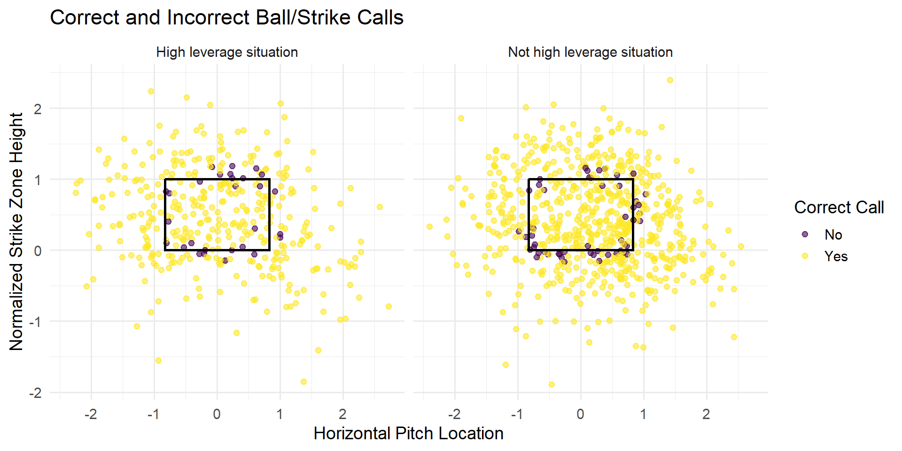
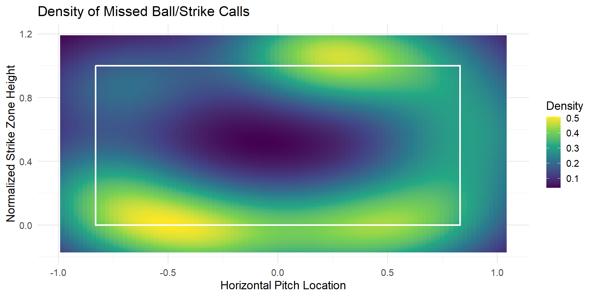

Is the New ABS System Useful/Needed?
Umpire Accuracy in the 2025 World Series
Question(s) of Interest
Main question:
Would an ABS-style strike zone have been useful in the 2025 World Series?
More specifically:
- Where did umpires miss ball/strike calls?
- Were missed calls concentrated near the edges of the zone?
- Did accuracy change by game situation or count?
Correct and Incorrect Calls

Missed Call Density

Main Takeaways
- Umpires were mostly accurate overall.
- Missed calls were most common near the edges of the strike zone and in non 2 strike counts
- ABS would likely be most useful on borderline pitches.
- The biggest value of ABS may be reducing mistakes in high-leverage situations.
Limitations and Future Work
- This is an approximation of ABS, not official ABS data.
- One World Series is a small sample.
- This project does not fully simulate how game outcomes would change.
- Future work could include full-season data or run expectancy.